hand-left-relaxed cuff included; wrist seam, anatomy side and contact pose need verification
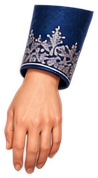
hand-right-relaxed cuff included; wrist seam, anatomy side and contact pose need verificationhands-hold-reference two fused hands; cannot use as a separated groom hand; redraw holding pose and wrist
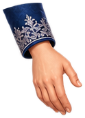
hand-left-open alternative hand pose; includes cuff; fingers must remain intact
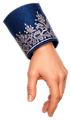
hand-right-open alternative hand pose; includes cuff; verify wrist orientation
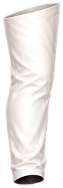
thigh-left visible trouser section only; hidden hip and knee caps/8-unit overlap missing
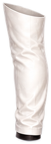
shin-left open cut ends; hidden knee and ankle overlap missing
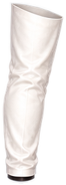
thigh-right visible trouser section only; hidden hip and knee caps/8-unit overlap missing
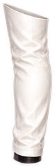
shin-right open cut ends; hidden knee and ankle overlap missing
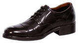
shoe-left-side intact isolated shoe; facing left; rest angle/heel/toe need registration
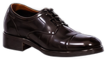
shoe-right-side intact isolated shoe; rest angle/heel/toe need registration
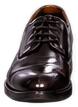
shoe-left-front-reference one isolated front-view shoe; alternative view, not a side-view walking foot
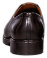
shoe-left-back-reference one isolated back-view shoe; alternative view, not a side-view walking foot